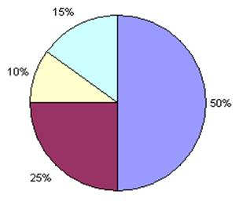

|
|
Chapter 16 |
Reversi AI Simulation |
Topics Covered In This Chapter:
· Simulations
· Percentages
· Pie Charts
· Integer Division
· The round() function
· “Computer vs. Computer” Games
The Reversi AI algorithm was simple, but it beats me almost every time I play it. This is because the computer can process instructions fast, so checking each possible position on the board and selecting the highest scoring move is easy for the computer. It would take a long time for me to find the best move this way.
The Reversi program in Chapter 14 had two functions, getPlayerMove() and getComputerMove() which both returned the move selected as a two-item list like [x, y]. The both also had the same parameters, the game board data structure and which tile they were. getPlayerMove() decided which [x, y] move to return by letting the player type in the coordinates. getComputerMove() decided which [x, y] move to return by running the Reversi AI algorithm.
What happens when we replace the call to getPlayerMove() with a call to getComputerMove()? Then the player never types in a move, it is decided for them! The computer is playing against itself!
We will make three new programs, each based on the Reversi program in the last chapter:
· AISim1.py will be made by making changes to reversi.py
· AISim2.py will be made by making changes to AISim1.py
· AISim3.py will be made by making changes to AISim2.py
You can either type these changes in yourself, or download them from the book’s website at the URL http://invpy.com/chap16.
Save the old reversi.py file as AISim1.py by clicking on File ► Save As, and then entering AISim1.py for the file name and clicking Ok. This will create a copy of our Reversi source code as a new file that you can make changes to, while leaving the original Reversi game the same (you may want to play it again). Change the following code in AISim1.py:
266. move = getPlayerMove(mainBoard, playerTile)
To this (the change is in bold):
266. move = getComputerMove(mainBoard, playerTile)
Now run the program. Notice that the game still asks you if you want to be X or O, but it won’t ask you to enter any moves. When you replaced getPlayerMove(), you no longer call any code that takes this input from the player. You still press enter after the original computer’s moves (because of the input('Press Enter to see the computer\'s move.') on line 285), but the game plays itself!
Let’s make some other changes to AISim1.py. All of the functions you defined for Reversi can stay the same. But replace the entire main section of the program (line 246 and on) to look like the following code. Some of the code has remained, but most of it has been altered. But all of the lines before line 246 are the same as in Reversi in the last chapter. You can also avoid typing in the code by downloading the source from the URL http://invpy.com/chap16.
If you get errors after typing this code in, compare the code you typed to the book’s code with the online diff tool at http://invpy.com/diff/AISim1.
AISim1.py
246. print('Welcome to Reversi!')
247.
248. while True:
249. # Reset the board and game.
250. mainBoard = getNewBoard()
251. resetBoard(mainBoard)
252. if whoGoesFirst() == 'player':
253. turn = 'X'
254. else:
255. turn = 'O'
256. print('The ' + turn + ' will go first.')
257.
258. while True:
259. drawBoard(mainBoard)
260. scores = getScoreOfBoard(mainBoard)
261. print('X has %s points. O has %s points' % (scores['X'], scores['O']))
262. input('Press Enter to continue.')
263.
264. if turn == 'X':
265. # X's turn.
266. otherTile = 'O'
267. x, y = getComputerMove(mainBoard, 'X')
268. makeMove(mainBoard, 'X', x, y)
269. else:
270. # O's turn.
271. otherTile = 'X'
272. x, y = getComputerMove(mainBoard, 'O')
273. makeMove(mainBoard, 'O', x, y)
274.
275. if getValidMoves(mainBoard, otherTile) == []:
276. break
277. else:
278. turn = otherTile
279.
280. # Display the final score.
281. drawBoard(mainBoard)
282. scores = getScoreOfBoard(mainBoard)
283. print('X scored %s points. O scored %s points.' % (scores['X'], scores['O']))
284.
285. if not playAgain():
286. sys.exit()
How the AISim1.py Code Works
The AISim1.py program is the same as the original Reversi program, except that the call to getPlayerMove() has been replaced with a call to getComputerMove(). There have been some other changes to the text that is printed to the screen to make the game easier to follow.
When you run the AISim1.py program, all you can do is press Enter for each turn until the game ends. Run through a few games and watch the computer play itself. Since both the X and O players are using the same algorithm, it really is just a matter of luck to see who wins. The X player will win half the time, and the O player will win half the time.
Making the Computer Play Itself Several Times
But what if we created a new algorithm? Then we could set this new AI against the one implemented in getComputerMove(), and see which one is better. Let’s make some changes to the source code. Do the following to make AISim2.py:
1. Click on File ► Save As.
2. Save this file as AISim2.py so that you can make changes without affecting AISim1.py. (At this point, AISim1.py and AISim2.py will have the same code.)
3. Make changes to AISim2.py and save that file. (AISim2.py will have the new changes and AISim1.py will have the original, unchanged code.)
Add the following code. The additions are in bold, and some lines have been removed. When you are done changing the file, save it as AISim2.py.
If this is confusing, you can always download the AISim2.py source code from the book’s website at http://invpy.com/chap16.
AISim2.py
If you get errors after typing this code in, compare the code you typed to the book’s code with the online diff tool at http://invpy.com/diff/AISim2.
AISim2.py
246. print('Welcome to Reversi!')
247.
248. xwins = 0
249. owins = 0
250. ties = 0
251. numGames = int(input('Enter number of games to run: '))
252.
253. for game in range(numGames):
254. print('Game #%s:' % (game), end=' ')
255. # Reset the board and game.
256. mainBoard = getNewBoard()
257. resetBoard(mainBoard)
258. if whoGoesFirst() == 'player':
259. turn = 'X'
260. else:
261. turn = 'O'
262.
263. while True:
264. if turn == 'X':
265. # X's turn.
266. otherTile = 'O'
267. x, y = getComputerMove(mainBoard, 'X')
268. makeMove(mainBoard, 'X', x, y)
269. else:
270. # O's turn.
271. otherTile = 'X'
272. x, y = getComputerMove(mainBoard, 'O')
273. makeMove(mainBoard, 'O', x, y)
274.
275. if getValidMoves(mainBoard, otherTile) == []:
276. break
277. else:
278. turn = otherTile
279.
280. # Display the final score.
281. scores = getScoreOfBoard(mainBoard)
282. print('X scored %s points. O scored %s points.' % (scores['X'], scores['O']))
283.
284. if scores['X'] > scores['O']:
285. xwins += 1
286. elif scores['X'] < scores['O']:
287. owins += 1
288. else:
289. ties += 1
290.
291. numGames = float(numGames)
292. xpercent = round(((xwins / numGames) * 100), 2)
293. opercent = round(((owins / numGames) * 100), 2)
294. tiepercent = round(((ties / numGames) * 100), 2)
295. print('X wins %s games (%s%%), O wins %s games (%s%%), ties for %s games (%s%%) of %s games total.' % (xwins, xpercent, owins, opercent, ties, tiepercent, numGames))
How the AISim2.py Code Works
You have added the variables xwins, owins, and ties to lines 248 to 250 to keep track of how many times X wins, O wins, and when they tie. Lines 284 to 289 increment these variables at the end of each game, before it loops back to start a new game.
You have removed most of the print() function calls from the program, as well as the calls to drawBoard(). When you run AISim2.py, it asks you how many games you want to run. Now that you’ve taken out the call to drawBoard() and replace the while True: loop with a for game in range(numGames): loop, you can run a number of games without stopping for the user to type anything. Here is a sample run of ten of computer vs. computer Reversi games:
Welcome to Reversi!
Enter number of games to run: 10
Game #0: X scored 40 points. O scored 23 points.
Game #1: X scored 24 points. O scored 39 points.
Game #2: X scored 31 points. O scored 30 points.
Game #3: X scored 41 points. O scored 23 points.
Game #4: X scored 30 points. O scored 34 points.
Game #5: X scored 37 points. O scored 27 points.
Game #6: X scored 29 points. O scored 33 points.
Game #7: X scored 31 points. O scored 33 points.
Game #8: X scored 32 points. O scored 32 points.
Game #9: X scored 41 points. O scored 22 points.
X wins 5 games (50.0%), O wins 4 games (40.0%), ties for 1 games (10.0%) of 10.0 games total.
Because the algorithms include randomness, your run won’t have the exact numbers as above.
Printing things out to the screen slows the computer down, but now that you have removed that code, the computer can run an entire game of Reversi in about a second or two. Think about it. Each time the program printed out one of those lines with the final score, it ran through an entire game (which is about fifty or sixty moves, each move carefully checked to be the one that gets the most points).

Figure 16-1: A pie chart with 10%, 15%, 25%, and 50% portions.
Percentages are a portion of a total amount, and range from 0% to 100%. If you had 100% of a pie, you would have the entire pie. If you had 0% of a pie, you wouldn't have any pie at all. 50% of the pie would be half of the pie. A pie is a common image to use for percentages. In fact, there’s a kind of chart called a pie chart which shows how much of the full total a certain portion is. Figure 16-1 is a pie chart with 10%, 15%, 25%, and 50% portions below. Notice that 10% + 15% + 25% + 50% adds up to 100%: a whole pie.
We can calculate the percentage with division. To get a percentage, divide the part you have by the total, and then multiply by one hundred. For example, if X won 50 out of 100 games, you would calculate the expression 50 / 100, which would evaluate to 0.5. Multiply this by 100 to get a percentage (in this case, 50%).
Notice that if X won 100 out of 200 games, you could calculate the percentage with 100 / 200, which would also evaluate to 0.5. When you multiply 0.5 by 100 to get the percentage, you get 50%. Winning 100 out of 200 games is the same percentage (that is, the same portion) as winning 50 out of 100 games.
Division Evaluates to Floating Point
It is important to note that when you use the / division operator, the expression will always evaluate to a floating point number. For example, the expression 10 / 2 will evaluate to the floating point value 5.0, not to the integer value 5.
This is important to remember, because adding an integer to a floating point value with the + addition operator will also always evaluate to a floating point value. For example, 3 + 4.0 will evaluate to the floating point value 7.0 and not to the integer 7.
Try entering the following code into the interactive shell:
>>> spam = 100 / 4
>>> spam
25.0
>>> spam = spam + 20
>>> spam
45.0
Notice that in the above example, the data type of the value stored in spam is always a floating point value. You can pass the floating point value to the int() function, which will return an integer form of the floating point value. But this will always round the floating point value down. For example, the expressions int(4.0), int(4.2), and int(4.9) will all evaluate to 4, and never 5.
The round() function will round a float number to the nearest whole float number. Try entering the following into the interactive shell:
>>> round(10.0)
10.0
>>> round(10.2)
10.0
>>> round(8.7)
9.0
>>> round(3.4999)
3.0
>>> round(2.5422, 2)
2.54
The round() function also has an optional parameter, where you can specify to what place you want to round the number to. For example, the expression round(2.5422, 2) evaluates to 2.54 and round(2.5422, 3) evaluates to 2.542.
Displaying the Statistics
291. numGames = float(numGames)
292. xpercent = round(((xwins / numGames) * 100), 2)
293. opercent = round(((owins / numGames) * 100), 2)
294. tiepercent = round(((ties / numGames) * 100), 2)
295. print('X wins %s games (%s%%), O wins %s games (%s%%), ties for %s games (%s%%) of %s games total.' % (xwins, xpercent, owins, opercent, ties, tiepercent, numGames))
The code at the bottom of the program will show the user how many wins X and O had, how many ties there were, and how what percentages these make up. Statistically, the more games you run, the more accurate your percentages will be for finding the best AI algorithm. If you only ran ten games, and X won three of them, then it would seem that X’s algorithm only wins 30% of the time. However, if you run a hundred, or even a thousand games, then you may find that X’s algorithm wins closer to 50% (that is, half) of the games.
To find the percentages, divide the number of wins or ties by the total number of games. Then multiply the result by 100. However, you may end up with a number like 66.66666666666667. So pass this number to the round() function with the second parameter of 2 to limit the precision to two decimal places, so it will return a float like 66.67 instead (which is much more readable).
Let’s try another experiment. Run AISim2.py again, but this time have it run a hundred games:
Welcome to Reversi!
Enter number of games to run: 100
Game #0: X scored 42 points. O scored 18 points.
Game #1: X scored 26 points. O scored 37 points.
Game #2: X scored 34 points. O scored 29 points.
Game #3: X scored 40 points. O scored 24 points.
...skipped for brevity...
Game #96: X scored 22 points. O scored 39 points.
Game #97: X scored 38 points. O scored 26 points.
Game #98: X scored 35 points. O scored 28 points.
Game #99: X scored 24 points. O scored 40 points.
X wins 46 games (46.0%), O wins 52 games (52.0%), ties for 2 games (2.0%) of 100.0 games total.
Depending on how fast your computer is, this run might have taken a about a couple minutes. You can see that the results of all one hundred games still evens out to about fifty-fifty, because both X and O are using the same algorithm to win.
Let’s add some new functions with new algorithms. But first click on File ► Save As, and save this file as AISim3.py. Before the print('Welcome to Reversi!') line, add these functions in the following source code listing.
AISim3.py
If you get errors after typing this code in, compare the code you typed to the book’s code with the online diff tool at http://invpy.com/diff/AISim3.
AISim3.py
245. def getRandomMove(board, tile):
246. # Return a random move.
247. return random.choice( getValidMoves(board, tile) )
248.
249.
250. def isOnSide(x, y):
251. return x == 0 or x == 7 or y == 0 or y ==7
252.
253.
254. def getCornerSideBestMove(board, tile):
255. # Return a corner move, or a side move, or the best move.
256. possibleMoves = getValidMoves(board, tile)
257.
258. # randomize the order of the possible moves
259. random.shuffle(possibleMoves)
260.
261. # always go for a corner if available.
262. for x, y in possibleMoves:
263. if isOnCorner(x, y):
264. return [x, y]
265.
266. # if there is no corner, return a side move.
267. for x, y in possibleMoves:
268. if isOnSide(x, y):
269. return [x, y]
270.
271. return getComputerMove(board, tile)
272.
273.
274. def getSideBestMove(board, tile):
275. # Return a corner move, or a side move, or the best move.
276. possibleMoves = getValidMoves(board, tile)
277.
278. # randomize the order of the possible moves
279. random.shuffle(possibleMoves)
280.
281. # return a side move, if available
282. for x, y in possibleMoves:
283. if isOnSide(x, y):
284. return [x, y]
285.
286. return getComputerMove(board, tile)
287.
288.
289. def getWorstMove(board, tile):
290. # Return the move that flips the least number of tiles.
291. possibleMoves = getValidMoves(board, tile)
292.
293. # randomize the order of the possible moves
294. random.shuffle(possibleMoves)
295.
296. # Go through all the possible moves and remember the best scoring move
297. worstScore = 64
298. for x, y in possibleMoves:
299. dupeBoard = getBoardCopy(board)
300. makeMove(dupeBoard, tile, x, y)
301. score = getScoreOfBoard(dupeBoard)[tile]
302. if score < worstScore:
303. worstMove = [x, y]
304. worstScore = score
305.
306. return worstMove
307.
308.
309. def getCornerWorstMove(board, tile):
310. # Return a corner, a space, or the move that flips the least number of tiles.
311. possibleMoves = getValidMoves(board, tile)
312.
313. # randomize the order of the possible moves
314. random.shuffle(possibleMoves)
315.
316. # always go for a corner if available.
317. for x, y in possibleMoves:
318. if isOnCorner(x, y):
319. return [x, y]
320.
321. return getWorstMove(board, tile)
322.
323.
324.
325. print('Welcome to Reversi!')
How the AISim3.py Code Works
A lot of these functions are similar to one another, and some of them use the new isOnSide() function. Here’s a review of the new algorithms we’ve made:
Table 17-1: Functions used for our Reversi AI.
|
Function |
Description |
|
getRandomMove() |
Randomly choose a valid move to make. |
|
getCornerSideBestMove() |
Take a corner move if available. If there’s no corner, take a space on the side. If no sides are available, use the regular getComputerMove() algorithm. |
|
getSideBestMove() |
Take a side space if there’s one available. If not, then use the regular getComputerMove() algorithm. This means side spaces are chosen before corner spaces. |
|
getWorstMove() |
Take the space that will result in the fewest tiles being flipped. |
|
getCornerWorstMove() |
Take a corner space, if available. If not, use the getWorstMove() algorithm. |
Comparing the Random Algorithm Against the Regular Algorithm
Now the only thing to do is replace one of the getComputerMove() calls in the main part of the program with one of the new functions. Then you can run several games and see how often one algorithm wins over the other. First, let’s replace O’s algorithm with the one in getComputerMove() with getRandomMove() on line 351:
351. x, y = getRandomMove(mainBoard, 'O')
When you run the program with a hundred games now, it will look something like this:
Welcome to Reversi!
Enter number of games to run: 100
Game #0: X scored 25 points. O scored 38 points.
Game #1: X scored 32 points. O scored 32 points.
Game #2: X scored 15 points. O scored 0 points.
...skipped for brevity...
Game #97: X scored 41 points. O scored 23 points.
Game #98: X scored 33 points. O scored 31 points.
Game #99: X scored 45 points. O scored 19 points.
X wins 84 games (84.0%), O wins 15 games (15.0%), ties for 1 games (1.0%) of 100.0 games total.
Wow! X won far more often than O did. That means that the algorithm in getComputerMove() (take any available corners, otherwise take the space that flips the most tiles) wins more games than the algorithm in getRandomMove() (which makes moves randomly). This makes sense, because making intelligent choices is usually better than just choosing things at random.
Comparing the Random Algorithm Against Itself
What if we changed O’s algorithm to also use the algorithm in getRandomMove()? Let’s find out by changing O’s function call on line 351 from getComputerMove() to getRandomMove() and running the program again.
Welcome to Reversi!
Enter number of games to run: 100
Game #0: X scored 37 points. O scored 24 points.
Game #1: X scored 19 points. O scored 45 points.
...skipped for brevity...
Game #98: X scored 27 points. O scored 37 points.
Game #99: X scored 38 points. O scored 22 points.
X wins 42 games (42.0%), O wins 54 games (54.0%), ties for 4 games (4.0%) of 100.0 games total.
As you can see, when both players are making random moves, they each win about 50% of the time. (In the above case, O happen to get lucky and won a little bit more than half of the time.)
Just like moving on the corner spaces is a good idea because they cannot be flipped, moving on the side spaces may also be a good idea. On the side, the tile has the edge of the board and isn’t as out in the open as the other pieces. The corners are still preferable to the side spaces, but moving on the sides (even when there’s a move that can flip more pieces) may be a good strategy.
Comparing the Regular Algorithm Against the CornersSideBest Algorithm
Change X’s algorithm on line 346 to use getComputerMove() (the original algorithm) and O’s algorithm on line 351 to use getCornerSideBestMove() (which first tries to move on a corner, then tries to move on a side space, and then takes the best remaining move), and let’s run a hundred games to see which is better. Try changing the function calls and running the program again.
Welcome to Reversi!
Enter number of games to run: 100
Game #0: X scored 52 points. O scored 12 points.
Game #1: X scored 10 points. O scored 54 points.
...skipped for brevity...
Game #98: X scored 41 points. O scored 23 points.
Game #99: X scored 46 points. O scored 13 points.
X wins 65 games (65.0%), O wins 31 games (31.0%), ties for 4 games (4.0%) of 100.0 games total.
Wow! That’s unexpected. It seems that choosing the side spaces over a space that flips more tiles is a bad strategy to use. The benefit of the side space isn’t greater than the cost of flipping fewer of the opponent’s tiles. Can we be sure of these results? Let’s run the program again, but this time play one thousand games. This may take a few minutes for your computer to run (but it would take weeks for you to do this by hand!) Try changing the function calls and running the program again.
Welcome to Reversi!
Enter number of games to run: 1000
Game #0: X scored 20 points. O scored 44 points.
Game #1: X scored 54 points. O scored 9 points.
...skipped for brevity...
Game #998: X scored 38 points. O scored 23 points.
Game #999: X scored 38 points. O scored 26 points.
X wins 611 games (61.1%), O wins 363 games (36.3%), ties for 26 games (2.6%) of 1000.0 games total.
The more accurate statistics from the thousand-games run are about the same as the statistics from the hundred-games run. It seems that choosing the move that flips the most tiles is a better idea than choosing a side move.
Comparing the Regular Algorithm Against the Worst Algorithm
Now set the X player’s algorithm on line 346 to use getComputerMove() and the O player’s algorithm on line 351 to getWorstMove() (which makes the move that flips over the least number of tiles), and run a hundred games. Try changing the function calls and running the program again.
Welcome to Reversi!
Enter number of games to run: 100
Game #0: X scored 50 points. O scored 14 points.
Game #1: X scored 38 points. O scored 8 points.
...skipped for brevity...
Game #98: X scored 36 points. O scored 16 points.
Game #99: X scored 19 points. O scored 0 points.
X wins 98 games (98.0%), O wins 2 games (2.0%), ties for 0 games (0.0%) of 100.0 games total.
Whoa! The algorithm in getWorstMove(), which always chose the move that flips the fewest tiles, will almost always lose to the regular algorithm. This isn’t really surprising at all. (In fact, it’s surprising that this strategy wins even 2% of the time!)
Comparing the Regular Algorithm Against the WorstCorner Algorithm
How about when we replace getWorstMove() on line 351 with getCornerWorstMove()? This is the same algorithm except it takes any available corner pieces before taking the worst move. Try changing the function calls and running the program again.
Welcome to Reversi!
Enter number of games to run: 100
Game #0: X scored 36 points. O scored 7 points.
Game #1: X scored 44 points. O scored 19 points.
...skipped for brevity...
Game #98: X scored 47 points. O scored 17 points.
Game #99: X scored 36 points. O scored 18 points.
X wins 94 games (94.0%), O wins 6 games (6.0%), ties for 0 games (0.0%) of 100.0 games total.
The getCornerWorstMove() still loses most of the games, but it seems to win a few more games than getWorstMove() (6% compared to 2%). Does taking the corner spaces when they are available really make a difference?
Comparing the Worst Algorithm Against the WorstCorner Algorithm
You can check by setting X’s algorithm to getWorstMove() and O’s algorithm to getCornerWorstMove(), and then running the program. Try changing the function calls and running the program again.
Welcome to Reversi!
Enter number of games to run: 100
Game #0: X scored 25 points. O scored 39 points.
Game #1: X scored 26 points. O scored 33 points.
...skipped for brevity...
Game #98: X scored 36 points. O scored 25 points.
Game #99: X scored 29 points. O scored 35 points.
X wins 32 games (32.0%), O wins 67 games (67.0%), ties for 1 games (1.0%) of 100.0 games total.
Yes, even when otherwise making the worst move, it does seem like taking the corners results in many more wins. While you’ve found out that going for the sides makes you lose more often, going for the corners is always a good idea.
Summary
This chapter didn't really cover a game, but it modeled various strategies for Reversi. If we thought that taking side moves in Reversi was a good idea, we would have to spend weeks, even months, carefully playing games of Reversi by hand and writing down the results. But if we know how to program a computer to play Reversi, then we can have the computer play Reversi using these strategies for us. If you think about it, you’ll realize that the computer is executing millions of lines of our Python program in seconds! Your experiments with the simulation of Reversi can help you learn more about playing Reversi in real life.
In fact, this chapter would make a good science fair project. Your problem can be which set of moves leads to the most wins against other sets of moves, and make a hypothesis about which is the best strategy. After running several simulations, you can determine which strategy works best. With programming you can make a science fair project out of a simulation of any board game! And it is all because you know how to instruct the computer to do it, step by step, line by line. You can speak the computer’s language, and get it to do large amounts of data processing and number crunching for you.
That’s all for the text-based games in this book. Games that only use text can be fun, even though they’re simple. But most modern games use graphics, sound, and animation to make much more exciting looking games. For the rest of the chapters in this book, we will learn how to create games with graphics by using a Python module called Pygame.